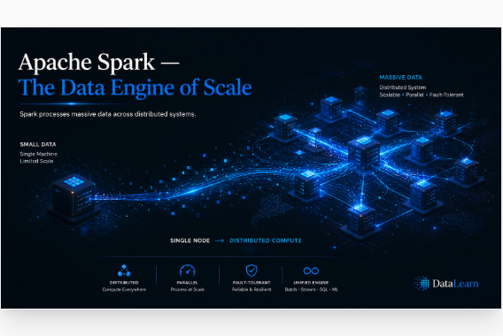

Clear Review Version
Apache Spark, viewed one visual at a time.
This page avoids stretching the captured images beyond their source resolution. Use the “View image” button on each card to inspect one visual at a time with its English explanation.

Visual Walkthrough
The current files are screen captures from the ChatGPT viewer, so the clearest display is native-size viewing rather than enlarging the image inside a large card.
These images are clearer here because the page no longer scales them up. To make tiny text truly sharp, the next step is to export the original high-resolution images from ChatGPT instead of using viewer screenshots.